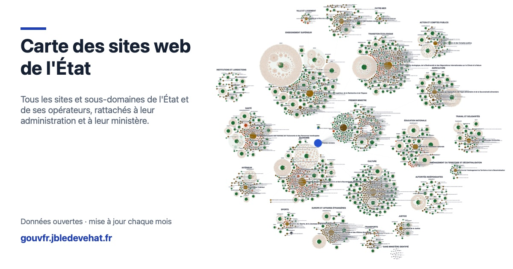

Partager les données publiques pour mieux piloter nos politiques publiques
On ne pilote bien que ce que l'on connaît. Combien de sites l'État fait-il vivre, et sont-ils sûrs ? Combien coûte chaque politique, qui la paie, à qui vont les aides ? Les réponses existent, dispersées dans des fichiers officiels. Ces tableaux de bord les rassemblent, les vérifient et les rendent lisibles, pour que décideurs, agents publics et citoyens partent des mêmes chiffres.
Proposition indépendante construite à partir de données publiques ; ce n'est pas un outil officiel.Deux tableaux de bord

Les sites web de l'État
Tous les sites de l'État et de ses opérateurs, rattachés à leur ministère et vérifiés un par un : sécurité, nom de domaine, démarches essentielles, feuille de route.
Le budget de l'État et l'argent public
Toutes les dépenses et recettes publiques de 2024, le budget de l'État ministère par ministère, et les aides aux entreprises, chacune rattachée à son ministère.
De la donnée à la décision
La même démarche pour chaque tableau de bord.
- RecenserPartir des sources officielles : DINUM, Annuaire de l'administration, Insee, DGFiP, annexes du projet de loi de finances.
- VérifierRecouper chaque total avec le chiffre officiel publié, signaler les écarts plutôt que les masquer.
- RelierRattacher chaque site, chaque crédit, chaque aide à un ministère responsable.
- PartagerPublier les données en CSV et JSON, sous Licence Ouverte, avec le code qui les produit.
- PiloterFaire ressortir ce qui demande une action, et proposer une feuille de route.